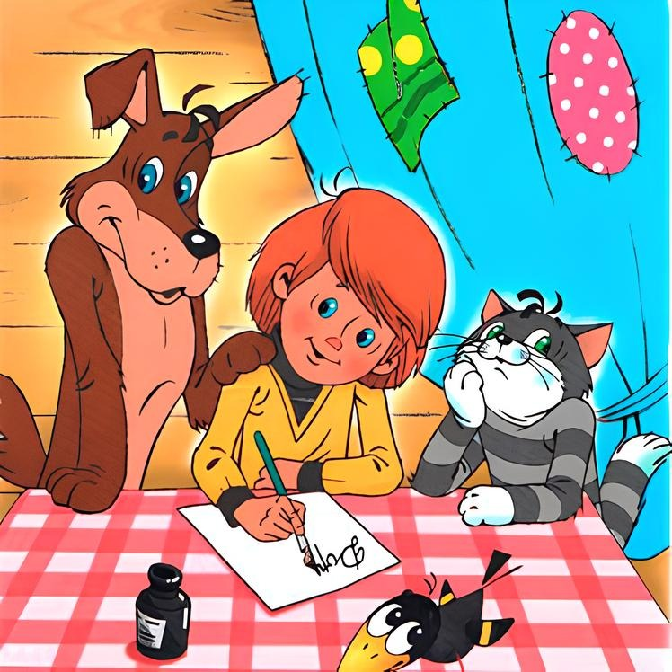

Дядя Федор, пес и кот и политика
Эдуард Успенский
Однажды Шарик прибежал домой и к дяде Федору:
— Дядя Федор, вот ты скажи, возможен у нас на селе военный переворот?
— А почему ты меня об этом спрашиваешь?
— Потому, что все об этом говорят. Что это такое «военный переворот»?
— Это такая ситуация, — говорит дядя Федор, — когда всю власть берут военные.
— А как?
— Очень просто. Везде вводятся военные посты. На заводе, в министерстве, на телевидении, в газетах. Везде, везде.
— И у нас в деревне?
— И у нас в деревне.
— А как? — спрашивает Шарик.
— А так. К примеру, в сельсовете у нас будет сидеть генерал, на почте будет сидеть генерал, магазином будет командовать полковник.
— А польза какая-нибудь от этого будет?
— Никакой. Ну, ты сам посуди: разве от этого продукты прибавятся, станет ли больше телевизоров в магазине?
— Зато дисциплина улучшится, — говорит почтальон Печкин. — Все на работу будут строем ходить и вовремя. И полковник в магазине не станет магазин на три часа раньше закрывать.
— Но ведь от этого товаров больше не станет, — спорит дядя Федор. — Вот ты, Матроскин, корову пасешь один, а если рядом будет полковник стоять, молока больше появится?
— Ни в коем случае. Меньше станет, надо еще полковника поить.
— Правильно, — говорит дядя Федор. — А вот вы, товарищ Печкин, вы что, больше газет разнесете, если у вас на почте генерал сидеть будет?
— Я думаю — меньше, раза в два.
— А почему? — спрашивает Шарик.
— А потому, что они половину газет закроют, — говорит почтальон Печкин.
— А что, может быть, больше костюмов шить начнут на фабриках, когда военные придут?
— Да ничего подобного, — говорит кот Матроскин. — Еще меньше начнут шить.
— Это почему еще? — спрашивает почтальон Печкин.
— Да потому, что по стойке «смирно» шить придется.
— А кто у нас военными переворотами командует? — спрашивает Шарик.
— Военный маршал Вязов, — отвечает почтальон Печкин. — Мы с ним вместе служили.
— Я его знаю! — кричит Шарик. — Я его портрет в газете видел. У него еще медалей на груди семь рядов на восемь — пятьдесят шесть. И это еще не все.
— Почему не все? — спрашивает дядя Федор.
— На спине еще столько же. Вот, может, ему и написать, чтобы он военный переворот отменил.
— Не надо писать, — говорит дядя Федор, — переворота и так не будет.
— Почему? — спрашивает Шарик. — У нас что, генералов не хватит?
— Генералов у нас хватит, генералов у нас завались, — отвечает кот Матроскин. — Солдат уговорить надо. Для переворота еще солдаты нужны.
***
Однажды кот Матроскин спросил дядю Федора:
— Дядя Федор, вот если бы тебя в правительство ввели, каким бы ты министром стал?
— Я бы стал министром образования, — ответил дядя Федор. — Я бы сделал все учебники веселыми, в школах бы учебное кино показывал. В каждой школе бы построил бассейн. Я бы все школы компьютерами завалил.
— А я бы стал двумя министрами сразу, — сказал Шарик. — Полдня министром рыбного хозяйства, полдня министром охотничьего. Я бы всю страну продуктами завалил.
— А я бы, — сказал кот Матроскин, — я бы Выжковым стал.
— Да ты что, сдурел? — спрашивает Шарик. — Смотри, до чего он страну довел. Мяса нет, молока нет, яйцо на рынке рубль стоит. Обоев в магазине и то нет.
— Эх, Шарик, темнота ты деревенская, — отвечает кот. — Да он все делает, чтобы я разбогател. Раньше молоко было дешевле бензина. А сейчас я за один килограмм сметаны могу два килограмма денег взять. Так что спасибо ему, Николаю Ивановичу.
— Ну и что ты со своими деньгами делать будешь? Ведь в магазинах-то пусто.
— А я, может, ими свою печку оклею. Ты же сам говорил, что обоев в магазине нет. Цены такой печке не будет.
— А я бы Вьючковым стал, — говорит почтальон Печкин.
— Кем? Кем?
— Министром КГБ. Я бы всю страну этими самыми завалил, шпионами. Понимаешь, дядя Федор, вот ты хочешь учебники веселые сделать, а тебе говорят: бумаги нет. У тебя ничего и не вышло. Или вот Шарик — балбес, хочет страну продуктами засыпать. А ему говорят: вагоны кончились, вот и все, никаких тебе продуктов. А у меня в моем министерстве тихо и спокойно. Кто идет с фотоаппаратом, тот и шпион. Кто с лозунгом — лазутчик. Арестовывай всех подряд — и ты молодец.
— А если ты неправильно арестовал? — спрашивает пес Шарик. — Вон у дяди Федора тоже аппарат есть, и у меня фоторужье имеется. Значит, нас арестовывать теперь?
— А неправильно арестовал, выпускай всех. И ты опять же молодец. Да ты сам подумай, — сказал Печкин, — кто у нас всех арестовывал? КГБ. А кто реабилитацию проводит? Опять же КГБ! И за то, и за это награды так и сыплются.
И сам же себя по голове постучал. Галчонок Хватайка спрашивает:
— Кто там?
Печкин отвечает:
— Это я — министр Вьючков пришел всех вас арестовывать.
Шарик аж за ружье схватился:
— А ну руки вверх!
Печкин отвечает:
— Нашел, чем министра КГБ пугать, фоторужьем каким-то! Мы и не такое у себя на Лубянке видели.
Тогда кот Матроскин говорит:
— А вы, товарищ министр, внимательный человек?
— Конечно, — отвечает Печкин, — в КГБ только очень внимательные люди работают. Там даже когда в стукачи берут и то всех на внимательность исследуют в специальной поликлинике.
— Тогда посмотрите, кого сейчас по телевизору передают — самого депутата Собчака. Вот сейчас Шарик сделает фотомонтаж: будущий министр КГБ — почтальон Печкин целуется с Собчаком.
— Да чего там с Собчаком, я ему поцелуй с Бушем устрою на фотографии! — кричит Шарик. — А то и с самой Тэтчер на фоне поленницы!
Печкин даже на колени встал:
— Не губите, товарищи подозреваемые, это я так, пошутил насчет КГБ. Лучше я министром связи сделаюсь. Тогда у нас все газеты вовремя доставляться будут, особенно в сельской местности.
И все решили, что это, наверное, лучше.
***
Однажды пес Шарик забежал в дом и говорит:
— Дядя Федор, объясни мне, пожалуйста, что такое рыночные отношения.
— Я тебе объясню, — сказал кот Матроскин. — Слушай. Вот мы с моей Муркой произвели сто литров молока. Мы садимся на Тр-Тр Митю и везем молоко на рынок. Там молоко продаем и покупаем тебе в магазине мотоцикл с коляской. Вот и все.
— А что такое регулируемые рыночные отношения?
— А это совсем другое. Слушай. Вот мы с Муркой произвели сто литров молока. Нам говорят: «Отвезите молоко на молочный завод».
— Кто говорит? — спрашивает Шарик.
— Товарищ Выжков говорит. Есть у нас такой самый главный министр. И мы везем молоко на завод.
— И там на заводе тебе дают деньги?
— Кто дает?
— Товарищ Выжков. Самый главный министр.
— Ничего он не дает.
— А как же мотоцикл покупать?
— А так. Ты слушай. Завод делает из молока молочный порошок. И везет его в центр в Москву.
— И там тебе дают деньги на мой мотоцикл с коляской?
— Кто дает?
— Товарищ Выжков. Самый главный министр.
— Да нет. Ничего он не дает. Там из порошка делают молоко. И везут его в магазин.
— И там дают деньги на мой мотоцикл?
— Ничего подобного, — объясняет Матроскин. — Из магазина деньги уходят в государственный банк.
— А оттуда идут к тебе на мотоцикл?
— Да нет, Шарик, ты, право, как дурачок. Ты все хочешь упростить. Оттуда они идут в Министерство сельского хозяйства.
— А оттуда ко мне мотоцикл?
— Оттуда их перечисляют в наш совхоз, директору.
— А он уже отдает мне, и я иду покупать…
— Ошейник.
— Почему ошейник?
— Потому что на мотоцикл уже не останется.
— А кто же все деньги забрал?
— Как кто? Товарищ Выжков. Наш самый главный министр. Который рыночные отношения регулирует.
— А зачем?
— Как зачем — чтобы купить себе мотоцикл с коляской.
И дядя Федор с ним согласился.